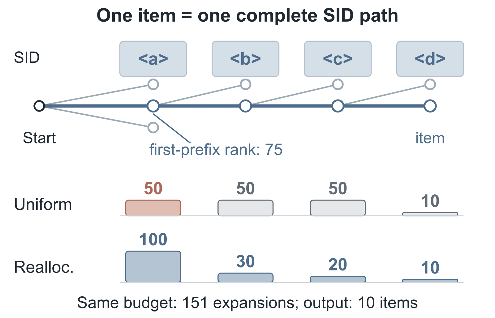
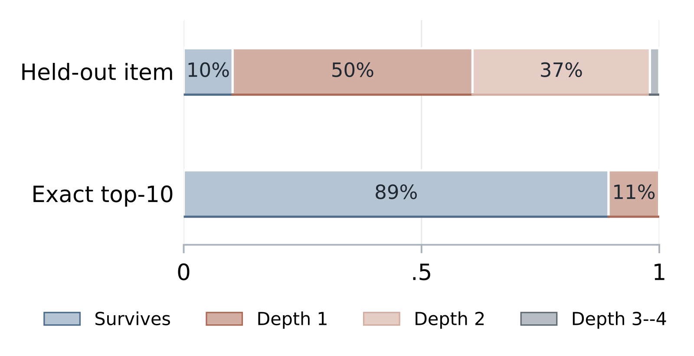
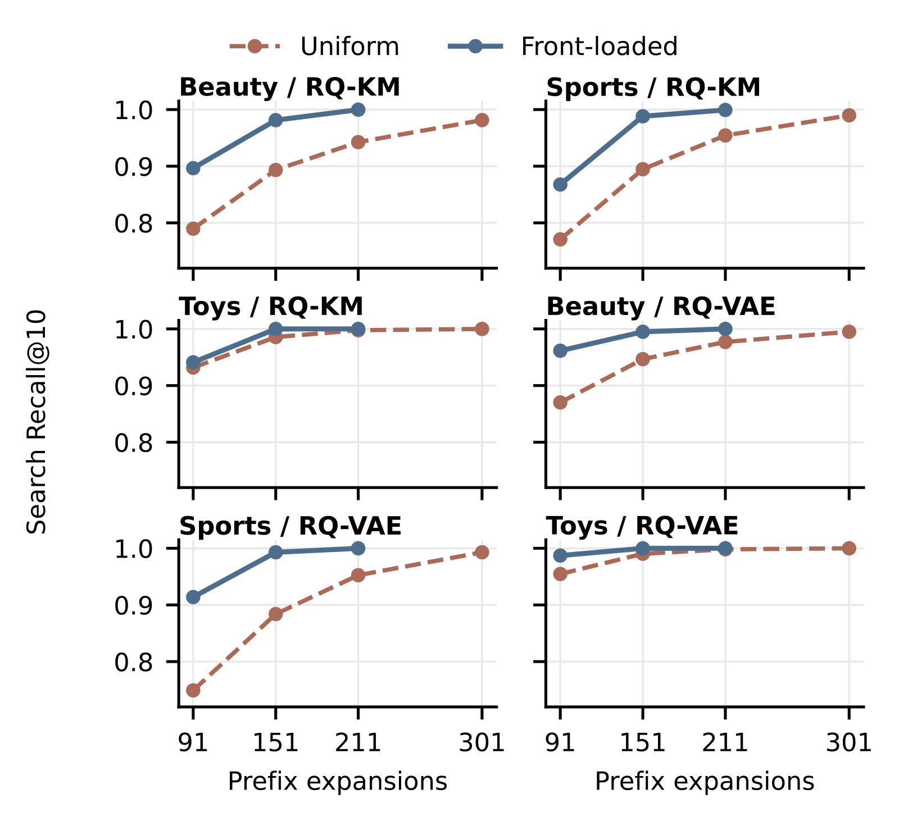

Contents · 9 sections
1What problem is it actually solving?2How do we know which step loses it?3How is width reallocated?4Experiments: does moving width actually help?5Identical output: how much time does it save?6What happens with more outputs?7Limitations as I see them8How a recommendation team could try it9ConclusionSHARE
Teams building generative recommenders who are fighting beam-search latency and recall should read this one. A generative recommender uses beam search to produce a SID one token at a time, and the usual way to miss fewer good results is to widen every step at once. This paper checks six full-test settings of TIGER one by one: every result that the model's own scores put in the top 10, but that beam search pruned, was lost at the very first step. So the cheaper move is to concentrate width on the first step and narrow the later ones. The model, the SIDs and the scores stay untouched; only the number of prefixes kept at each step changes.
With this allocation, about half the prefix budget (the total number of prefixes kept across steps) reproduces the top 10 of a beam twice as wide, in the same order: all 77,373 test users on the three RQ-VAE datasets match, at a budget of 151 instead of 301. At the same budget, moving width to the first step recovers 0.96 to 10.90 more percentage points of the model's own top 10. Decoder time falls only 6.35% to 6.39%, because most of the time goes to the forward calls and cache management in each round, and that cost does not change. Beam width should go to the step where results get lost. Checking this only needs one offline pass of exact scoring on a sample of users, without touching serving.
What problem is it actually solving?
First, what a prefix is. Each item is encoded as a SID of 4 tokens, for example <a><b><c><d>. The model reads the user's history and generates one token after another. A partly generated SID is called a prefix, such as <a> after the first token. Each prefix covers a group of items, and earlier prefixes cover more items. Once a prefix is pruned at some step, every item under it is out as well.
The trouble is that a prefix is scored only up to the current step. A prefix may have a low first-token probability while one item under it has very high probabilities for the remaining tokens, so its full-SID score ends up the highest. At the first step beam search cannot see those later scores, so it may prune that prefix. An illustration:
| Prefix (illustrative) | First-token log prob | Log prob of the best item's last three tokens | Full-SID score | Step one at width 1 |
|---|---|---|---|---|
| A | -1.0 | -3.0 | -4.0 | kept |
| B | -2.0 | -0.5 | -2.5 | pruned |
By full-SID score, the item under B is number one. But at width 1 the first step only compares -1.0 with -2.0, so B is pruned. No amount of width at later steps brings it back, because the B branch is no longer in the beam.

The figure is the paper's own example: an item's first prefix ranks 75th at step one. With 50 per step it is pruned; with 100 at step one it survives, under the same total budget.
How do we know which step loses it?
To find where results are lost, we first need to know what should have been found. The authors build a reference that is used only in offline evaluation. They have the model score the complete SID of every item in the catalog, the score being the sum of the 4 token log probabilities. The 10 highest totals are the model's own true top 10, which the paper calls the exact top-10. Serving has no such reference; it is only used to diagnose what beam search missed.
With the reference, two kinds of error can be separated. When the user's actual next click is not recommended, either the model scored it badly or beam search pruned it. Comparing against the exact top-10 isolates the loss caused by search. The authors measure it with Search Recall@10: the share of beam search's top 10 that falls inside the exact top-10.
Then, for every missed exact top-10 item, they check at which step its SID prefix first dropped out of the beam, which the paper calls the first-prune depth. The figure below shows one run on Beauty with RQ-KM codes (the code constructions are described in the experiments section) and 50 per step:

The contrast is telling. Losses of the items users actually clicked spread across steps 1 and 2, because they include cases where the model itself scored badly. Of the model's own exact top-10, 89.34% survive to the end, and every pruned one is lost at step 1. The authors repeated this on six settings, three datasets times two ways of building SIDs, with the same result. Every pruned exact top-10 item is lost at the first step, because first-step prefixes cover the most items and the later token scores are not yet visible.
How is width reallocated?
Since the problem is at the first step, move width there. For a fair comparison the authors define a prefix budget: the number of prefixes kept at every step except the last, plus 1 for the start. The last step holds complete SIDs that are not expanded further, so it is not counted.
Here is the arithmetic with the paper's schedules. Keeping 50 per step (Beam-50) costs 1 + 50 + 50 + 50 = 151. Keeping 100 per step (Beam-100) costs 1 + 100 + 100 + 100 = 301, so doubling the width doubles the budget.
The authors' Front-151 keeps 100 at step one, 30 at step two, 20 at step three and 10 at the end, costing 1 + 100 + 30 + 20 = 151. This shows that Front-151 spends exactly what Beam-50 spends, just at different steps.
Each step picks prefixes the same way as ordinary beam search: every prefix kept at the previous step is extended by one token, using only tokens that lead to real items; all the new prefixes are pooled, ranked by cumulative log probability up to this step, and the top b are kept, where b is this step's width. Front-151 only changes b at each step. Hoot says

Illustrative numbers. Each step extends every kept prefix by one token, and all new prefixes are ranked together by cumulative log probability, keeping the top few. Source: paper §2.1 Eq. (2): each step extends every kept prefix by one legal token and keeps the top b by score truncated at this step; numbers are illustrative
This budget is a count, not a time. It is an upper bound on how many prefixes get expanded: when a branch has few possible next tokens, fewer are actually expanded. Real latency is measured separately later. The whole change applies only at decoding: model parameters, SIDs and per-token scores are unchanged.
Experiments: does moving width actually help?
The experiments use the TIGER implementation from an open-source toolkit on Amazon's Beauty, Sports and Toys categories. For each category the SIDs are built in two ways, residual K-means (RQ-KM in the paper) and RQ-VAE, giving six settings. Search Recall and output identity are computed on the full test sets; latency is measured on 512 sampled users per model.
The first question: at the same budget, how much more of the exact top-10 does Front-151 recover than Beam-50?
| Dataset / SID construction | Test users | Beam-50 (budget 151) | Front-151 (budget 151) | Gain | Beam-100 (budget 301) |
|---|---|---|---|---|---|
| Beauty / RQ-KM | 22,363 | 0.8934 | 0.9813 | +0.0879 | 0.9814 |
| Sports / RQ-KM | 35,598 | 0.8947 | 0.9882 | +0.0935 | 0.9898 |
| Toys / RQ-KM | 19,412 | 0.9856 | 0.9999 | +0.0143 | 0.9999 |
| Beauty / RQ-VAE | 22,363 | 0.9466 | 0.9950 | +0.0483 | 0.9950 |
| Sports / RQ-VAE | 35,598 | 0.8839 | 0.9929 | +0.1090 | 0.9929 |
| Toys / RQ-VAE | 19,412 | 0.9903 | 0.9999 | +0.0096 | 0.9999 |
All six settings improve, and Front-151 essentially matches Beam-100 at half its budget. Toys gains little because Beam-50 already recovers over 98% there, leaving little to add.
The second question: does the gain really come from giving width to the first step and not something else? On Sports / RQ-VAE the authors run a control with the budget fixed at 151 and only the position of the wide step changed. Front-151 is 100, 30, 20, 10 and recovers 99.29%. Moving the 100 to step two (30, 100, 20, 10) or step three (30, 20, 100, 10) recovers only 74.92%, a gap of 24.37 percentage points. This shows that where the width goes is enough on its own to create a 24-point gap: later steps can only choose among branches already kept, and cannot bring back branches dropped at step one.
The third question: are the recovered items just the marginal ranks 6 to 10? Repeating the comparison on the top 5, all six settings still improve, with Sports / RQ-VAE gaining 6.48 percentage points. So even the highest-ranked recommendations get pruned at step one.

Looking at different budgets, as in the figure above, the authors also try a slightly wider schedule, Front-211, keeping 140 at step one followed by 40, 30 and 10. Its Search Recall beats Beam-100 in all six settings while its budget is about 30% smaller. This means front-loading width reaches the level of uniform widening with a smaller budget.
Identical output: how much time does it save?
The result with the most engineering value is this one: across all 77,373 test users on the three RQ-VAE datasets, Front-151 and Beam-100 return exactly the same top 10, in the same order. Downstream stages receive the same input as before, so the ranking quality does not need to be re-evaluated.
For latency, the authors compare Front-151's decoder time against a schedule that keeps 100 per step and also only 10 at the last step. The last column comes from a separate profiling run and shows how much of that baseline's time goes to forward calls and cache management:
| Dataset / SID construction | 100 per step, 10 at end (ms) | Front-151 time (ms) | Saved (%) | Forward and cache share (%) |
|---|---|---|---|---|
| Beauty / RQ-KM | 16.63 | 15.42 | 6.61 | 79.15 |
| Sports / RQ-KM | 17.68 | 16.21 | 7.00 | 77.83 |
| Toys / RQ-KM | 17.40 | 16.26 | 6.01 | 79.63 |
| Beauty / RQ-VAE | 17.45 | 16.33 | 6.35 | 77.32 |
| Sports / RQ-VAE | 17.41 | 16.27 | 6.39 | 76.78 |
| Toys / RQ-VAE | 17.05 | 15.90 | 6.35 | 78.33 |
Only the three RQ-VAE rows were checked user by user for identical output, saving 6.35% to 6.39%; the RQ-KM outputs are not fully identical to the baseline, for example Search Recall of 0.9882 versus 0.9898 on Sports / RQ-KM, so those rows serve only as a latency reference.
The budget halves, yet time falls only about 6%. The reason is in the last column: forward calls and cache management take 76.78% to 79.63% of the time. The paper's profiling shows that narrower later steps cut candidate and selection work, while the 4 forward rounds and their call and cache costs all remain. Those retained costs limit how much can be saved overall.
Finding the model's ranking more completely does little for predicting real clicks. On the 35,598 Sports / RQ-VAE users, the number of top 10 lists that hit the user's actual next click rises from 659 under Beam-50 to 677 under Front-151. Recall@10 only moves from 0.0185 to 0.0190. Reproducing the model's ranking and predicting user behavior well are two different things: reproducing the ranking depends on search, while predicting behavior still depends on the model.
What happens with more outputs?
Everything so far asks for 10 results. In an exploratory experiment with 256 users per model, with schedules settled after a trial on Sports, the authors check what happens with more outputs. With width fixed at 100 per step, asking for 100 results instead of 10 on Sports drops Search Recall from about 99% to 86%. When more outputs are needed, later steps also start losing results, and the schedule must be retuned. The authors' recipe is to keep every possible first token at step one, 1.5 times the output size at steps two and three, and the output size at the last step. For 100 results the reference is a beam 200 wide at every step, and for 200 results a beam 400 wide. In both cases this schedule returned exactly the same candidates as the reference beam.
Conversely, if the output stays at 10 and only the reference beam gets wider, much of the work is redundant. The authors keep every possible first token at step one, 20 at steps two and three, and 10 at the end. This reproduces the top 10 of beams 200 to 800 wide, saving 10.59% to 11.89% of the time against the 200-wide beam and about half against the 800-wide one. The saving is large because the extra width has no effect on the output.
Limitations as I see them
First, the schedules were explored on the Beauty test set and then fixed for Sports and Toys. The Beauty results therefore carry some test-set tuning; Sports and Toys are the more trustworthy evidence, and they show the same effect.
Second, the scale is far from production. The three catalogs hold only 11,924 to 18,357 items, and the model is TIGER. With catalogs of tens of millions of items and deeper SIDs, whether loss still concentrates at step one has to be checked again on one's own system. Recall dropping to 86% at 100 outputs is a signal: when conditions change, the bottleneck can move.
Third, the time saving is tied to the implementation. The roughly 6% saving was measured on the authors' hardware with one user per call, FP32 precision, and the time to encode user history excluded. When production decodes many users in one batch, the shares of forward work and candidate selection both change, so the saving has to be measured on one's own system.
How a recommendation team could try it
- Build the exact reference offline. Take a sample of users, score the complete SID of every catalog item with the current model, and keep the top K. This is for diagnosis only and never enters the serving path.
- Measure the first-prune depth. Run the current production beam width and see at which step the missed exact top-K items mostly drop out. If they also concentrate at step one, go on; if they spread across steps, the bottleneck is different and moving width may not help.
- At the same budget, move width to the step that loses the most, and compare Search Recall and whether the output matches a wider beam. When the output is identical, downstream ranking does not need re-evaluation.
- Finally, measure real latency in the production implementation, together with the forward-pass share, to judge how much can be saved.
Conclusion
The value of this paper is methodological: before widening the beam, find out at which step results are lost.
| Dimension | Assessment |
|---|---|
| Problem importance | Medium-high. Beam width directly sets recall and latency in generative recommendation, and nearly every team tunes it |
| Novelty | Medium. The idea is simple; the contribution is locating the loss to one step and proving it with controls |
| Evidence | Medium. Six settings, full test sets and per-user output checks, but small datasets and schedules tuned on one test set |
| Engineering cost | Low. Only per-step widths change, with no retraining and no SID changes |
| Worth trying | Yes. The diagnosis needs one offline pass of exact scoring on sampled users; its cost grows with the catalog but it never touches serving |
How did this read for you?
Hoot made a note. Thanks for the feedback.
One tap, no sign-in; tap again to undo. Only anonymous counts are kept, never who you are.
Discussion
Add experiment details, reproduction notes or a different take. Requires a GitHub sign-in.
Loading the discussion…